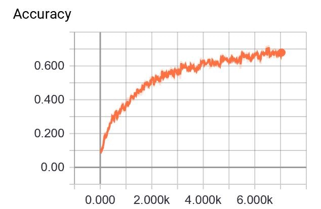
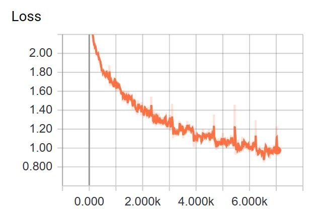

Image Classification
What is it ?
Image Classification is the task of distinguishing image from one another. Here we are going to classify images based on Supervised Learning algorithm. When we have training set for machine as well as the actual outcomes for training set and we are keep pushing algorithm to fit it self in actual outcome self then it is known supervised learning. To know more about learning algorithm types follow this link.
Aim and Expected outcome
The Aim of this project is to compare different Neural Net structure accuracy over differrent parameters to classify cifar-10 dataset.
We conduct this experiment in following order
1) - Preprocessing
The first task of any machine learning experiment is preprocessing, includes reading data, filtering it and converting in the required form.
Let's get dataset first, We are going to use tiny image net dataset from stanford, you can find it here.If you know how to read an image then move to next step Extract the package, this dataset contains more than 50,000 images distributed across 100 classes.
Take any image as like this oneimport matplotlib.image as mpimg
from scipy.ndimage import imread
Image = mpimg.imread("plane.jpg")
Using scipy we can read a image as shown above, Image is an array containing pixels of image from link given above.
type(Image)
Image.shape
You can see that, The Image object type is a N-d array in our our case is 3-D array 2 dimentions for height and width and another one is for depth used to store different RGB values for each pixel Let's visulalize our image.
import matplotlib.pyplot as plt
fig = plt.figure()
plt.imshow(Image)
plt.title("Image")
plt.show()
![](data:image/png;base64,iVBORw0KGgoAAAANSUhEUgAAAQUAAAEKCAYAAAAbwEBEAAAABHNCSVQICAgIfAhkiAAAAAlwSFlz
zArvqBEVLRMcmtYAAAAASUVORK5CYII=)
Hurray, We got a plane.
reading an image is easy task, but what about we have a lots of images in our case it is 50000, and distributed across variety of directories, then follow the code below.
import numpy as np
import os
contents=os.listdir("tiny-imagenet-200/train")
train_xRGB=[]
class_counter=0
while class_counter<len(contents):
files=os.listdir("tiny-imagenet-200/train/"+contents[class_counter]+"/images")
file_counter=0
while file_counter<len(files):
Image = mpimg.imread("tiny-imagenet-200/train/"+contents[class_counter]+"/images/"+files[file_counter])
train_xRGB.append(Image)
file_counter+=1
class_counter+=1
This code reads all the images and put in a list named train_RGB, but it is not done yet still we require the labels for the images we had justb read, and some images are gray scale so either we have to convert it to RGB or filter them out, it is not hard but time consuming and boring task.
So now we are using pre filtered dataset of cifar-10 for our experiment, download it from here.
The dataset is stored using pickle, if you are unfimiliar with it check Use of Pickle micro-post.
def unpickle(file):
import pickle
with open(file, 'rb') as fo:
dict = pickle.load(fo, encoding='bytes')
return dict
def pickle_data(train_x, train_y, test_x, test_y,Name):
import pickle
final_list = {'train_x':train_x, 'train_y':train_y, 'test_x':test_x, 'test_y':test_y}
with open(Name,'wb') as f:
pickle.dump(final_list,f)
Pickle and Unpickle functions used to read and write the data to file respectively.
Let's see what our raw data file contais ...
Data1 = unpickle("cifar-10/data_batch_1")
list(Data1)
b'data contains the actual image data, b'batch_label contains file numbers , b'label contains class label and b'filename has actual filenames. Here we only requires two things data and class labels.
ls_train = ["cifar-10/data_batch_1","cifar-10/data_batch_2","cifar-10/data_batch_3","cifar-10/data_batch_4","cifar-10/data_batch_5"]
ls_test = ["cifar-10/test_batch"]
data_label = b'data'
class_label = b'labels'
Let's define all the file names we need to read and label names. As below we can define a function and read the data
def create_featureset(files,data_label,class_label):
import numpy as np
X=[]
Y=[]
i=0
while i<len(ls_train):
contents = unpickle(ls_train[i])
X=X+list(contents[data_label])
Y=Y+list(contents[class_label])
i+=1
#--------- To vectorize the class value -------#
Vectorized_y = []
i=0
while i<len(Y):
current_y = [0]*10
current_y[Y[i]]=1
Vectorized_y.append(np.array(current_y))
i+=1
Y = Vectorized_y
return np.array(X), np.array(Y)
train_x, train_y = create_featureset(ls_train,data_label,class_label)
test_x, test_y = create_featureset(ls_test,data_label,class_label)
pickle_data(train_x, train_y, test_x, test_y,'cifar-10.dataset')
We are storing data using pickle for future use incase we need to take a break and all data will wiped out from RAM, so its a good practice whule handling big datasets.
Let's visulalize our classes, we will plot images for each class.
One image contains 3072 values, in which first 1024 values represents the Red value from RGB, in 32x32 format, so first we need to convert this data in form of 32 x 32 x 3 to plot it using matplotlib.
def makeimage(d1_array):
import numpy as np
d3_array=[]
i=0
while i<32:
row=[]
j=0
while j<32:
cell=[]
k=0
while k<3:
cell.append(d1_array[k*1024+i*32+j])
k+=1
row.append(np.array(cell))
j+=1
d3_array.append(np.array(row))
i+=1
d3_array = np.array(d3_array)
return d3_array
import matplotlib.pyplot as plt
image_counter=0
fig = plt.figure(figsize=(9,4))
i=0
while image_counter<10:
if np.argmax(train_y[i])==image_counter:
Image = makeimage(train_x[image_counter])
y = fig.add_subplot(2,5,image_counter+1)
y.imshow(Image)
plt.title("class :"+str(np.argmax(train_y[i])))
y.axes.get_xaxis().set_visible(False)
y.axes.get_yaxis().set_visible(False)
image_counter+=1
i+=1
plt.show()

def Destribute_RGB(RGB_list):
import numpy as np
R=[]
G=[]
B=[]
i=0
while i<len(RGB_list):
R.append(RGB_list[i][0:1024])
G.append(RGB_list[i][1024:2048])
B.append(RGB_list[i][2048:3072])
i+=1
return np.array(R), np.array(G), np.array(B)
when we got R, G abd B, there is simple conversion fromula to convert it to Gray scale. and using numpy we dont even have to iterate loop so it is much faster.
train_xR, train_xG, train_xB = Destribute_RGB(train_x)
test_xR, test_xG, test_xB = Destribute_RGB(test_x)
import numpy as np
Gray_Train = np.array(0.2989 * train_xR + 0.5870 * train_xG + 0.1140 * train_xB,'int')
Gray_Test = np.array(0.2989 * test_xR + 0.5870 * test_xG + 0.1140 * test_xB,'int')
Now, if you want to save the processed data, then save it using the Pickle as above.
2) - Introduction to Nueral Network
Before we start with fully connected layers, Let's take a look at Deep Learning and Neural Networks
The Artificial Neural Network, contains Neural cells as atomic module, It is the smallest unit of a Artificial brain as Neuron is smallest part of our brain.
All Artificial Neurons now I will term them as Neurons are connected to each other by some link, each link has some weight. Each neuron has to do some defined things like shown in image here,
- Neuron intercenpts the input and multiply it with relevent link weights. - x1*w1 and so on
- sum it up = "x1*w1 + x2*w2... "
- then apply a mathematical function on the result known as activation function. = sinh(Output)
- and at last it will pass this output to another neuron
Now consider a huge network of this neurons containing several thousand or even million neurons, connected to each other, may be some neurons not connected to all of them, Pretty hard to manage and even think or visualize so we use the concept of layers for simplicity.
Each dot in image is representing a Neuron, Here we define several layers like one input layer, one outpit layer and hidden layers which lies b/w input and output layers is ranging in number as per requirement.
For, application of fully connected layers, All the neurons in previous layers are connected with each neuron of next layer. and functionaning of the each neuron is same is defined above.
Backpropogation
It's is all understandable that how this network works, but the problem is we have to set the weight of links in such a way that it will lead us to require answers. How can we do that, random procedure may take years or more as weight can be fractions, So we here use concept of backpropogation. We find error in our answer and adjust the weight so that it will reduce the error, Although it is the huge topic of study, so i won't cover here. but some basic things to know here is there are many optimizers which can do this job like Gradient descent and Adam optimizer.
- Optimizers are algorithms, which defines the procedure to reduce the error
- But the learning rate will decide how much we should move towards the slope of error reduction,
Learning rate should not be so high as it can miss the lowest point, as it can not be too low as it can take huge time to approach the lowest point, so it shoul be some optimum value, there is no way we can decide it, but 10e-3 to 10e-5 generally works well.
So for the Fully Connected layer experiment, that's enough to know, as we will going to use some parameters to adjust the network. Still found it complicated then add comments or doubts here.
3) - Fully Connected Layers - FC
I'm, using Tensorflow and TFLearn, if you new to it or dont know how to install check this links : Installing tensorflow and Tensorflow for GPU support.
So let's import all the libraries we require for setup the network, i will explain the use of each as require.
import tflearn
from tflearn.layers.estimator import regression
from tflearn.layers.core import input_data, dropout, fully_connected
import numpy as np
import tensorflow as tf
Now i will read the data of Gray scale images, which we had converted in Preprocessing section and i had saved in in a file. The input should have to be in the form of array, each element should have to be in form of array, by fortune the reshape functionality in python do this task very easily as shown below.
data = unpickle("cifar-10.gray.dataset")
train_x = data['train_x']
train_y = np.array(data['train_y'])
test_x = data['test_x']
test_y = np.array(data['test_y'])
train_x = train_x.reshape([-1, 1024, 1])
test_x = test_x.reshape([-1, 1024, 1])
Here the reshape function is converting our array in N x 1024 x 1 form, which was in N x 1024 form, now each pixel value is itself an array, where "N" is number of training inputs in our case the number of images.
In [ -1,1024,1 ] - "-1" refers to unknown number as we don't need to know how many exact images we have, so it will read the array and put it automatically, in any reshape there should only be one time -1 is applicable else, it will become hasty for computer because multiple values might be possible.
Now let's define parameters for network,
Learning Rate : decides the speed on which the weights are going to be changed.
Model name : It is not actually a algorithm parameter, but helps to find proper graphs when you visualize the learning in Tensor-board.
LR = 1e-3
MODEL_NAME = 'tt-{}-{}.model'.format(LR,'5fc-image-classification')#5conv-basic
Now, let's define our Network,
on each run we have to wipe the data from temp, so that the graph will not clash with each another, so tf.reset_default_graph() might work.
Creating a network using TFLearn is very easy, just follow some basic steps:
- First you have to define the dimentions of input-layer and, like in example i'm calling the network FC
- To add layer, you have to define a layer on network it self like "FC = fully_connected(FC, 512, activation='relu')" this.
- "Relu" - is a activation function, known as Rectifier Linear Unit, Which will Keep positive but make zero to negative values
- Another function known as softmax : which generally used at last layer of neural network.
- We have to define the optimizer for regression process, as discussed before, we are choosing Adam here.
- loss : It is a measure to decide how much far away our answer is from actual value, as our measures are catagorical, we are choosing catagorical cross entropy to find error.
tf.reset_default_graph()
FC = input_data(shape=[None, 1024, 1], name='input')
FC = fully_connected(FC, 1024, activation='relu')
FC = fully_connected(FC, 1024, activation='relu')
FC = fully_connected(FC, 1024, activation='relu')
FC = fully_connected(FC, 1024, activation='relu')
FC = dropout(FC, 0.85)
FC = fully_connected(FC, 10, activation='softmax')
FC = regression(FC, optimizer='adam', learning_rate=LR, loss='categorical_crossentropy', name='targets')
model = tflearn.DNN(FC, tensorboard_dir='log')
Defining is done, so let's start training of our netwrok
model.fit({'input': train_x}, {'targets': train_y}, n_epoch=3, validation_set=({'input': test_x}, {'targets': test_y}), snapshot_step=500, show_metric=True, run_id=MODEL_NAME)
Epoch - is defined as iteration for learning, we train the entire network using all images and backpropogate error once, but once is not enough so epoch is defined as the number of iteartion for back propogation
- We can also see the accuracy in output
Let's run the same for more epochs, and compare the results.
model.fit({'input': train_x}, {'targets': train_y}, n_epoch=3, validation_set=({'input': test_x}, {'targets': test_y}), snapshot_step=500, show_metric=True, run_id=MODEL_NAME)
Oh!! GOD, You can actually see that the loss is actually decreasing and so accuracy should increase, but this showing adverse effects, how? - the thing is loss is defined as difference in probability,
- suppose you have 2 measures one is on required position and one is 5 units away. so total loss is 5 and accuracy is 0.5.
- Now cosider another senarion in which both are 2 units away, so loss is 4 but accuracy is 0.
It is still the topic of debate that which measure shoul be more important, according to me Loss has more stastical significance as compare to accuracy.
Any way this netwrok is useless to us as it is almost random, because image data is more complicated then that of some linear functions. so we have to choose some more efficient networks, one of them is RNN. And don't forget you can always add comments at end for any queries.
3) - Reccurent Neural Nets - RNN
I'm, using Tensorflow and TFLearn, if you new to it or dont know how to install check this links : Installing tensorflow and Tensorflow for GPU support.
Ler's start with quick intro to RNN. What really important and we need to know is RNNs keeps the previous training set and add some part of it in current value, so output depends upon current training tuple as well as previous tuple.
For example, suppose we are working to make a ChatBot, then the previous statement might give reasoning to produce the current statement. same thing we are going to apply on image. we have image size 32 x 32, we are going to devide the image in 16 parts, each of which contains 64 pixels, so network propogate 16 times and as you can see from image above the each 64 bits will use some part of previous 64-bits as well.
For our experiment, we are using special type of RNN networks, known as LSTM (Long Short term Memory). In RNN we can produce the current value based on some part of previous one, but what if we require some far away training tuple, like a tuple used 10 time units before or we don't have to use previous value for some perticular tuple, like same example in ChatBot , if we want to start a new topic of discussion we don't require past knowlegde, then what so this LSTM might be useful. If you curious about their working this article has very fine understanding.
Let's rehape our data to 32 x 32, as RNN can handle 2D data.
train_x = train_x.reshape([-1, 32, 32])
test_x = test_x.reshape([-1, 32, 32])
Now let's define our network, and undertand parameter mpre briefly,
- Model Name : It is good practice to define a Model name else it will give some random ID to it and it will become harder to find your network in Tensorboard for visualization when there are too many networks in your log folder.
- Layer Name : We do define name with our layers, it is to find them in Tensorboard visualization, as there are many layers it is good practice to give distinct name to important layers like imput layer and output layer
LR = 1e-3
MODEL_NAME = 'tt-{}-{}.model'.format(LR,'lstm-image-classification')#5conv-basic
tf.reset_default_graph()
RNN = input_data(shape=[None, 32, 32], name='input')
RNN = tflearn.lstm(RNN, 64, return_seq=True)
RNN = tflearn.lstm(RNN, 64)
RNN = tflearn.fully_connected(RNN, 10, activation='softmax')
RNN = dropout(RNN, 0.90)
RNN = tflearn.regression(RNN, optimizer='adam', loss='categorical_crossentropy', name="output")
model = tflearn.DNN(RNN, tensorboard_verbose=2)
model.fit({'input': train_x}, {'output': train_y}, n_epoch=3, validation_set=({'input': test_x}, {'output': test_y}), snapshot_step=500, show_metric=True, run_id=MODEL_NAME)
Here we are defining "model = DNN..." = DNN means Deep Neural Networks.
Now let's start visualization of training with Tensorboard. Tensorboard provides graphs for all variables like loss and accuracy in the form of graph.
I'm using windows, so here is a technique to open tensorboard in windows, but you can search on google and find it for your relevent platforms, it's very easy just one statement.
Now start training of network, and goto localhost:6006 or click this link to start your tensorboard. you will get results as below ...
Accuracy Graph for training set :
There are many grapha to see as well, as you can see that the accuracy is increasing at lower rate but loss is still fluctuating, as i said before decrement of loss suggests the efficient network, so you can experiment wirh same network for more layers or more epochs may be.
If you have any query or doubts just go below or click here and add comments. I will try my best.
4) - Convolution Neural Nets - CNN
I'm, using Tensorflow and TFLearn, if you new to it or dont know how to install check this links : Installing tensorflow and Tensorflow for GPU support.
Before starting let's take a quick look at Standard structure of Convolution Neural Network :
- Input Layer : Same as defined in experiment above
- Convolution Layer : Convolution Layer act as the feature detecting layer, it is not fully connected but sparsely connected. We define the size of feature and number of features we need to detect from images.
- Pooling Layer : Pooling can be described as Summariser, it will shrink the features to smaller sizes based on maximum value or average values.
- More Layers : Combination of Convolution and Pooling
- Fully Connected Layers : There should at least one fully connected layer at the end of convolution network, it will connect the all 2D features to 1D output layers and these are the layers where the logical decisions are taken based on findings of Convolution and pooling layers.
So let's start with new model creation.
train_x = train_x.reshape([-1, 32, 32,1])
test_x = test_x.reshape([-1, 32, 32,1])
LR = 1e-3
MODEL_NAME = 'tt-{}-{}.model'.format(LR,'6conv-4fc-basic')
tf.reset_default_graph()
CNN = input_data(shape=[None, 32, 32, 1], name='input')
CNN = tflearn.conv_2d(CNN, 64, 4, activation='relu')
CNN = tflearn.max_pool_2d(CNN, 2)
CNN = tflearn.conv_2d(CNN, 64, 4, activation='relu')
CNN = tflearn.max_pool_2d(CNN, 2)
CNN = tflearn.conv_2d(CNN, 64, 4, activation='relu')
CNN = tflearn.max_pool_2d(CNN, 2)
CNN = tflearn.conv_2d(CNN, 128, 4, activation='relu')
CNN = tflearn.max_pool_2d(CNN, 3)
CNN = tflearn.conv_2d(CNN, 128, 4, activation='relu')
CNN = tflearn.max_pool_2d(CNN, 2)
CNN = tflearn.conv_2d(CNN, 128, 4, activation='relu')
CNN = tflearn.avg_pool_2d(CNN, 3)
CNN = tflearn.fully_connected(CNN, 1024, activation='relu')
CNN = tflearn.dropout(CNN, 0.7)
CNN = tflearn.fully_connected(CNN, 1024, activation='relu')
CNN = tflearn.dropout(CNN, 0.75)
CNN = tflearn.fully_connected(CNN, 1024, activation='relu')
CNN = tflearn.dropout(CNN, 0.8)
CNN = tflearn.fully_connected(CNN, 1024, activation='relu')
CNN = tflearn.dropout(CNN, 0.85)
CNN = tflearn.fully_connected(CNN, 10, activation='softmax')
CNN = regression(CNN, optimizer='adam', learning_rate=LR, loss='categorical_crossentropy', name='targets')
model = tflearn.DNN(CNN, tensorboard_verbose=2)
Dropout : This is the part, I hadn't covered yet, Dropout usually applies to fully connected layers, they ensures that model doesn't overfit, they randomly select some propotion of neurons, which will not take part in output.
So Let's train
model.fit({'input': train_x}, {'targets': train_y}, n_epoch=3, validation_set=({'input': test_x}, {'targets': test_y}), snapshot_step=500, show_metric=True, run_id=MODEL_NAME)
Let's have look at graphs
- Orange : Convolution Network
- Blue : LSTM Network
Our CNN network beats the LSTM by very high value, but this results are till 3-epochs, and Accuracy is about 55%, and loss is quite less as compare to LSTM, which is very good thing.
Sometimes for difficult tasks we have to train network even for longer time or for more epochs like I'm showing results for till 9-epochs and accuracy reached 69% and even further training get me through the accuracy of 89%.But still there is room for improvements. So Good Luck....
Accuracy after 9th epoch
|  |  |
5) - Visualizing Outcomes
Let me tell you a very important thing, saving and loading the trained models, how it is useful ? -
- For future purpose : After training network, you have to use it after long time
- To send model to someone :To send the trained model to someone in mail.
- To check perfomance : I prefer to first train model for only 3 epochs and then if the perfomace is sufficient then go further else drop it. or by this you can swith between different models.
model.save(MODEL_NAME)
model.load(MODEL_NAME)
To visualize the test data, we need both the dataset, the one with Gray image for prediction and RGB images to visualize.
Image_Data = unpickle("cifar-10.dataset")
Gray_Data = unpickle("cifar-10.gray.dataset")
Image_test_x = np.array(Image_Data['test_x'])
Image_test_y = np.array(Image_Data['test_y'])
Test_x = np.array(Gray_Data['test_x'])
Now let's define, a get_label function which can return label based on numerical value...
def get_label(ls):
import numpy as np
ls = np.array(ls)
label_list = ["Aircraft","Automotive","Bird","Cat","Deer","Dog","Frog","Horse","Ship","Truck"]
return label_list[np.argmax(ls)]
We also have to define make image funcion which can return us 32 x 32 x 3 array from 3072 values...
def makeimage(d1_array):
import numpy as np
d3_array=[]
i=0
while i<32:
row=[]
j=0
while j<32:
cell=[]
k=0
while k<3:
cell.append(d1_array[k*1024+i*32+j])
k+=1
row.append(np.array(cell))
j+=1
d3_array.append(np.array(row))
i+=1
d3_array = np.array(d3_array)
return d3_array
So now we have image, and the get_label function ready, but we have to predict the value of label for each image we have for testing...
Now one by one we will give image data to model and predict the label and plot image to verify, to do that we have pass the data in form of array to model.predict(Input_Array), and same as input it will return us array of predicted value, let's observe...
image_counter=0
fig = plt.figure(figsize=(18,10))
while image_counter<45:
Image = makeimage(Image_test_x[image_counter])
Feed_Data = np.array(Test_x[image_counter].reshape(32,32,1))
model_out = model.predict([Feed_Data])[0]
Predicted_Label = get_label(model_out)
Actual_Label = get_label(Image_test_y[image_counter])
y = fig.add_subplot(5,9,image_counter+1)
y.imshow(Image)
plt.title(Predicted_Label)
y.axes.get_xaxis().set_visible(False)
y.axes.get_yaxis().set_visible(False)
image_counter+=1
plt.show()

our model efficiency is 80% with training of 20 epochs, it can improve even further till 90% then it is almost stable, i'm considering training for 20 epochs and 80 % efficiency so stastically we have 2000 images which are predicted wrogly by our predictor, so let's see them.., some images are even that complicated that we even can't sure about any class..
image_counter=0
print_counter=0
fig = plt.figure(figsize=(18,10))
while print_counter<45:
Image = makeimage(Image_test_x[image_counter])
Feed_Data = np.array(Test_x[image_counter].reshape(32,32,1))
model_out = model.predict([Feed_Data])[0]
Predicted_Label = get_label(model_out)
Actual_Label = get_label(Image_test_y[image_counter])
if (Predicted_Label != Actual_Label):
y = fig.add_subplot(5,9,print_counter+1)
y.imshow(Image)
plt.title(Actual_Label+"/"+Predicted_Label)
y.axes.get_xaxis().set_visible(False)
y.axes.get_yaxis().set_visible(False)
print_counter+=1
image_counter+=1
plt.show()

Here first label shows the actual one and second is predicted by our model, You can see that image in third row and first column it is pretty hard to detect, and think that the algorithm is running on Gray scale images, plot the Gray scale image for the same and try to predict.. So i can say that model is kind of awesome, don't you think ??
Conclusion
As technology moving towards intelligence, this algorithm exist everywhere, especially talking about Image Classifation, Google is using it in search results, facebook using it for auto tagging, Security industries using it in surveillance, Trraffic police found it useful in number plate recognition. It had covered huge spectrum from daily needs to crime pacification. So there limitless possibilities.
For image data, what I found is CNN are best ones, but still there is a huge room for improvements, there are other Neural network like Residual Nueral Networks and Network inside Network, which are also good choices. We can combine RNN and CNN in one network to get even good results. Try to make a model with uses the all 3 R,G and B parameter of images. I won't be able cover it all in single tutorial, but still for starters this is more that enough...
So feel free to add comments or suggestions because there is a huge room for improvements in this tutorials also and Wish you a very Happy Mining...

{kind=link}
Made with in India